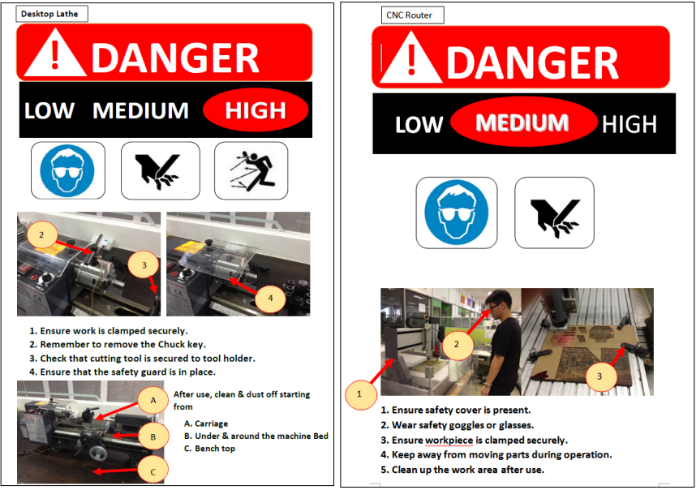
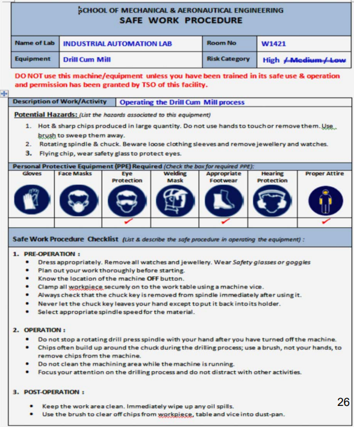

FabLab Safety
All students must obtain a safety certification since Singapore Polytechnic is required by law to maintain a safe workplace by the Workplace Safety and Health (WSH) Act of 2006. Students who succeed on the test receive certification, have access to skill training, and can work in the workshop and FabLab. To make sure that all students receive the proper safety and health instruction, failures must retake the exam.
General Safety Rules & Regulations in SP :
- Wear suitable attire, such as a shirt, long pants, fully covered shoes, and a bun (For those who have long hair)
- Use the shop or store just for what it was designed for
- Ask someone to teach you how to use the machine if you are unfamiliar with it, ideally your lecturer
Objectives:
- To be aware of WSH rules in SP and safe practices in FabLabs and workshops
- Know the hazards associated with machines and be familiar with the safety infrastructure in FabLabs and workshops
SP Workplace Safety & Health (WSH) Committee : SAFE
Support - Engages student's safety and health issues in campus through management teams and committee.
Act - 4 main areas of focus are: Risk Management Capability, Incident-Accident Reporting, Training & Education on WSH and Emergency Preparedness and Response Plan.
Facilitate - Emergency drills and Workshop trainings.
Educate - Every student and staff who works in the workshop/FabLab are required to go through the online WSH modules, and undergo the Safety Assessment with a passing percentage of 100%. Or else, they WILL NOT be allowed to enter the workshop.
Emergency Procedures:
For Ambulance call 995
For SCDF call 995
For Police call 999
SP Emergency Hotline call 6772-1234
When making an emergency call, give the following information:
- Your name
- Your location
- The nature of the emergency
Incident & Accident Reporting:
- Report all work related injuries to the technical staff support or supervising staff.
- Contact SP's General Office 6772-1206 or call SP Emergency Hotline when treatment to an injury is required.
- Do not leave any injuries unattended or without treatment.
Workshop Safety Infrastructure & Safety Communication :
Proper Attire:
1. Long hair must be tied up.
2. Keep adornment properly.
3. No loose items (jewellery) allowed.
4. No loose attire, No long sleeves (whenever possible).
5. Hands must be free of adornment.
6. Long pants.
7. Covered shoes (if possible, use anti-slip sole).
Important Things to Take Note:
- Personal Protective Equipment
- Safety Warning Placards
Safety Warning Placards:
Is usually hung on each of the machines in the SP workshop. It shows the level of danger of the machine and the appropriate measure to take when using them. It is very important to always read and understand the information before operating the machine
Safety Work Placards (SWP):
Is usually hung on each of the machines in the SP workshop. You are required to read it before using the machine. It shows the personal protective equipment (PPE) that is required and important information on the various operations of the machine.
Hazards Associated with Machinery & Workplace :
Mechanical Hazards:
1. Entanglement Hazards - Entanglements occur when stray hair, clothing, or other items are caught in a machine's moving parts.
2. Cutting Hazards - Machines used to cut wood, metal, or other materials provide cutting hazards at the site of operation. Moving cutting parts are harmful in machines. Due to their own momentum when they come into touch with a worker's body, they have the potential to cause significant injury (such as deep cuts and amputations).
3. Impact Hazards - Impact risks concern things that hit the human body but do not get inside of it. The force, speed, and inertia of the moving machine part during operation or upon ejection from the machine all affect how serious an impact hazard is.
4. Shearing Hazards - A shear point can be produced by machine parts that pass one another or immovable objects. causing a crushing or chopping effect. Shearing hazards typically exist if two machine pieces, such as a power press punch or a shearing machine, are present.
5. Crushing Hazards - It occurs when a bodily part becomes trapped between two moving mechanical components or between a moving component and a stationary object.
6. Draw-in Hazards - When a body part is dragged into the running nip points created by two opposing rotating components or between rotating and tangentially moving surfaces, injuries may result.
7. Friction and Abrasion Hazards - When abrasive surfaces move at a high speed, such as those produced by a sanding machine or grinding wheel, friction burns and abrasions can result.
Non-Mechanical Hazards:
1. Fall from Heights Hazards - Falls that occur when working at heights might result in sprains and shattered bones. In more severe circumstances, fatalities or head injuries.
2. Noise Hazards - In the course of using machines and performing tasks, noise is frequently produced. Long-term exposure to loud noises can result in NID (Noise-Induced Deafness). One should not spend more than eight hours a day in noise levels that exceed 85 dB (A) to prevent hearing loss.
3. Electrical Hazards - Electrical risks could be presented to workers. When using power tools or during electrical installations, for instance. Electricity-related accidents can occur when a machine fails, an electric circuit is overloaded or shorted out, or while coming into touch with a live wire.
4. Heat-related Hazards - Severe skin burns might result from coming into contact with heated machine surfaces. Heat-related illnesses can result from operations involving high temperatures, high humidity, or demanding physical activity. For instance, heat stroke or heat fatigue.
5. Chemical Hazards - Chemical exposure at work can have negative short-term or long-term impacts on health.
6. Fatigue - Fatigue is fatigue that can compromise safety and health by reducing mental and physical function. Due to a lack of focus and attentiveness, it can also result in near-miss occurrences, severe injuries, and even deadly accidents. The reasons of weariness may include prolonged periods of nonstop work, vigorous and continuous physical or mental effort, and a lack of rest and sleep.
7. Ergonomic Risk Factors - Injury is a possibility in workplace settings that wear and tear on the body. Repetition, awkward posture, violent movements, stationary position, direct pressure, vibration, extremely high temperatures, noise, and work stress are a few of these.
Machine Guarding & Safety Devices :
Types of Guards:
1. Fixed Guards - Securely fixed barriers that are stationary and immovable and are challenging to remove.
2. Adjustable Guards - They can be used in a variety of settings thanks to their mobility, especially close to the site of operation.
3. Self-Adjusting Guards - Automatically moves as materials arrive or pass through the machine. don't need to be moved about all the time.
Safety Devices:
1. Pressure-Sensitive Trips - Cables or wires connected to switches. The switch "trips" and shuts down the machine if a worker touches the cord.
2. Pressure Sensitive Mats - When a worker steps on the machine, it shuts off.
3. Pressure Tripping Pedal on a Lathe - Situated near the machine's base. The pedal must be depressed manually by a worker.
4. Emergency Switch - A red button that can be found on the machine's top. The button must be manually pressed by an employee.
Safe use of Hand & Power Tools :
It is important to handle tools with cautious, to eliminate potential injuries to our hands. Good housekeeping is required to eliminate hazards as well as providing a safe working environment for us and others to easily access various tools or places.
Housekeeping:
Good Housekeeping Practice:
- Always return the tools back to their designated positions in the tool rack after use
- Always keep the workplace neat and orderly after use
- Always clear away the debris and chips off the machines or workbenches afeer use
- Always bring unused or leftover materials to the recycle area